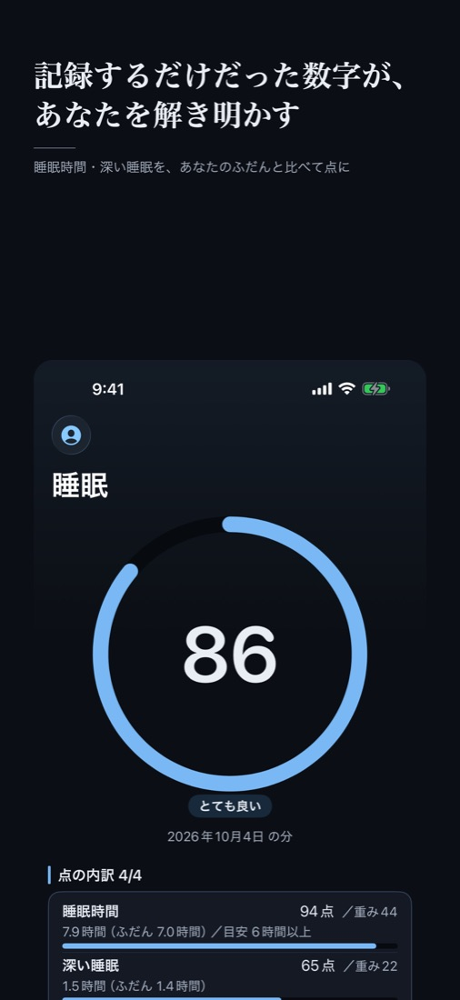

ヴェクリスは、カフェイン・習慣・食事の時刻と、睡眠の質（深い睡眠・睡眠時間）や体の数字の関係を、Apple Watch とあなたの記録で比べる iPhone のアプリです。AI が、あなたについて教えてくれます（AI プラン）。
iPhone 向け・日本の App Store のみ。深い睡眠や心拍変動は、Apple Watch を着けて寝た記録を使います。

午後にコーヒーを飲んだ日と飲まなかった日、よく歩いた日とそうでない日、晩ごはんが遅かった日と早かった日。それぞれの夜の深い睡眠や睡眠時間を、あなたの記録どうしで比べます。チェックを付けなくても、記録から自動で比べます。差がはっきりしないうちは「差あり」と出しません。
無料。カフェインや食事の時刻の比べは、記録を始めて 2 週間ほどで出はじめます。示すのは同時に起きた関係で、原因と結果ではありません。
何時間寝たかだけでなく、深い睡眠・レム・寝る時刻のばらつきまで分けて見られます。（無料）
写真から料理ごとの量と栄養を見積もり、食事摂取基準（2025 年版）の 16 栄養素で、足りている・足りないを出します。写真からの見積もりで、実測ではありません。文字で入れた食事の記録・過不足・献立は無料です。
あなたの記録を材料に、外部の AI（Google の Gemini）が読み解き、30 日の体調タイプ（傾向・気をつけたいこと・今週の実験）を出し、相談に答えます。
記録は iPhone の中にあります。ヘルスケアから読み込んだデータを、広告に使うことは一切ありません。外部の AI に送るかはあなたが選び、選ばなければ外部の AI へは何も送りません。外部の AI は Google の無料の利用枠で動いているため、送った内容は Google のサービスの改善に使われ、人が読むこともあります。詳しくはプライバシーポリシーをご覧ください。
本アプリは医療機器ではなく、病気の診断・治療を目的としたものではありません。表示される値は、あなた自身の過去の記録から算出した推定値です。体調の判断や受診については、医師にご相談ください。